Introduction
The dataset acquired on Kaggle includes comprehensive user activity data, ranging from sign-up information to event logs, enabling the identification of patterns, gaps, and opportunities for improvement for a fictional SaaS product.
Monitoring user journeys plays a vital role in the responsibilities of product managers and analysts. It offers valuable insights into customer pain points, enabling informed decisions to be made regarding product roadmaps and marketing strategies, ultimately driving meaningful improvements.
I intend to leverage Mixpanel to address significant inquiries regarding user journeys. However, it is important to emphasize that the metrics and trends you choose to analyze should align closely with your product or organization's objectives and vision. This approach will provide valuable insights into how well your product aligns with your team's expectations and performance.
An overview of Mixpanel
Mixpanel is a powerful analytics tool specifically designed for SaaS products, enabling you to gain valuable insights into user engagement metrics. It adopts a user-centric approach and emphasizes event tracking on websites or software. With Mixpanel, you have access to four essential reports that facilitate comprehensive analysis, and I will leverage each of them to address specific inquiries regarding our product.
Funnel
A funnel represents a step-by-step progression that visualizes the user flow towards conversion, providing a clear understanding of how individuals interact with your app. Funnels serve as valuable tools to assess the number of users advancing towards a specific goal, while also identifying and retaining those who drop off during the process.
What is the conversion rate of users within a 7-day period through my signup funnel?
I have examined all the available sign-up methods offered by both the marketing and product teams to assess the conversion rate, and the analysis reveals that influencer marketing has shown superior conversion compared to other approaches.
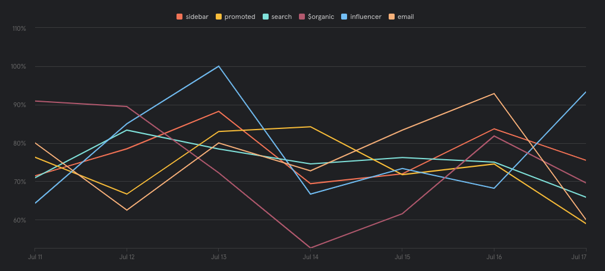What stage of the signup funnel experienced the highest user drop-off?
Initially, it was observed that a mere 11.59% of the individuals who initiated the sign-up funnel successfully reached its completion.
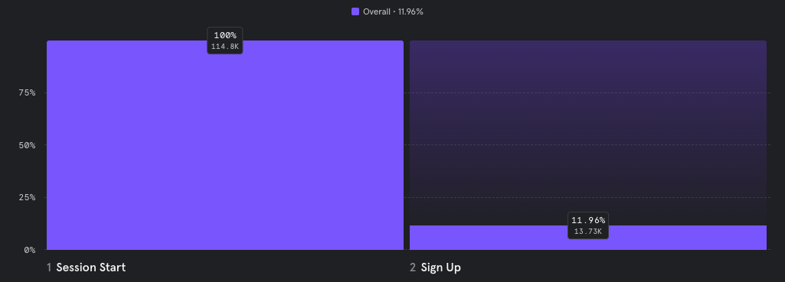Further analysis revealed that the majority of drop-offs occurred during the third stage (A+2), with a significant drop-off rate of 72.92%. To mitigate this issue, the product team can investigate the user experience and the information requested during this stage in order to minimize the drop-off rate.
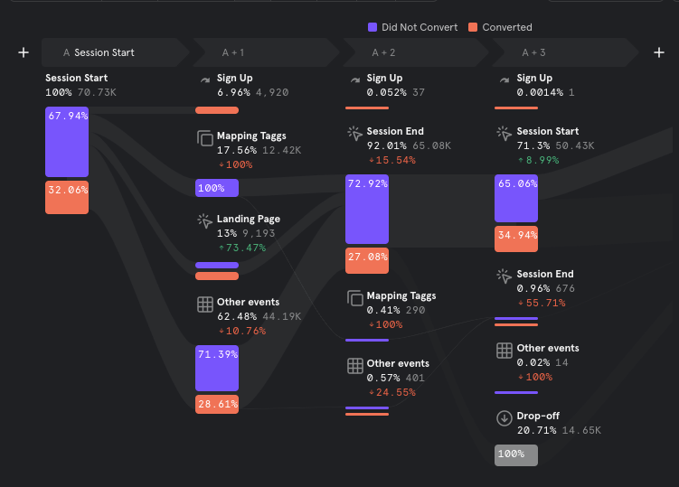
- What does the typical user journey flow look like?
Based on the findings from the funnel analysis, the typical user journey of a new user involves creating a workspace right after signing up, but a significant number of users tend to drop off at the authentication stage.
At this juncture, numerous follow-up questions arise. One such question is to determine the various authentication methods employed.
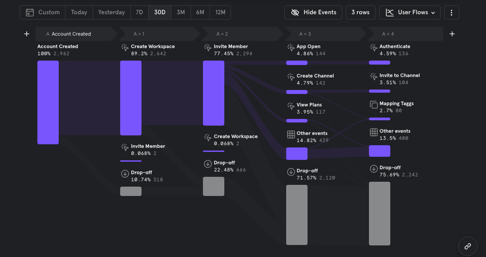Insights:
Insights serves as a valuable tool within Mixpanel, enabling the visualization of trends extracted from product data. It offers a variety of charts that can be utilized to analyze events, cohorts, and user profiles.
-
What has been the user base growth in each country over the past 6 months?
To depict the user growth across five countries, I employed a line chart.
Despite the majority of the users being located in the United States, a downward trajectory in user growth can be observed across all countries.
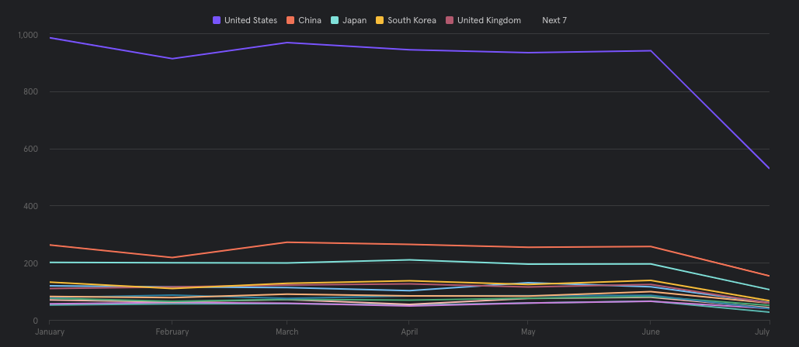Highlighting Popular Help Resources:
Among the help documentation, the section that garnered the highest assessment is related to 'Settings,' accumulating over 35k views. Conversely, 'Guides' received fewer than 5k views during the six-month period. Notably, there was a significant decline in views from May to July. This trend aligns with the observation made in our user acquisition analysis, suggesting that a substantial portion of visitors to our help documentation are new users.
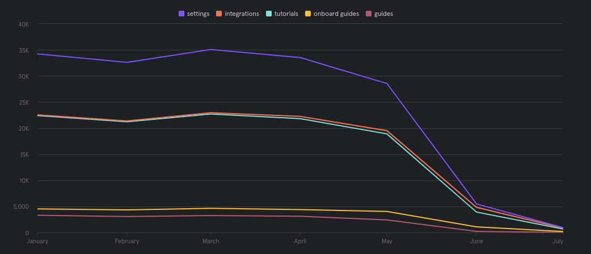Examining the Growth of Power Users:
To assess the growth of power users over the past six months, I established a cohort comprising active users who engaged with the product features, such as message creation and member invitations, during this period. Analyzing the data, I observed a decline in the number of power users from May to July.
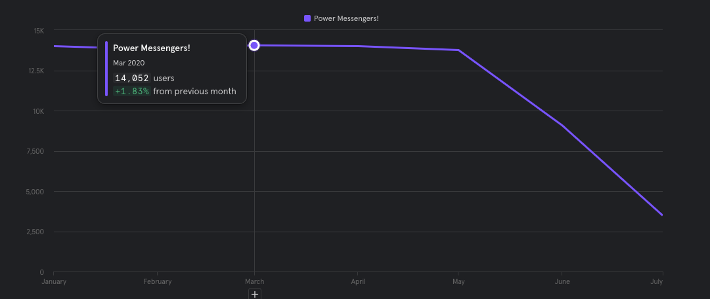Identifying a Common Trend and the Need for User Interviews:
I have noticed a consistent trend across all user analysis results, indicating the necessity of conducting user interviews. This will allow us to gain a deeper understanding of whether the product effectively addresses user problems and enable us to identify innovative changes that can reverse the declining outcomes.
Retention Analysis:
The primary goal of retention analysis is to assess the likelihood and reasons behind customer churn, while also identifying the stages at which customers tend to disengage.
-
How many users remain active two weeks after signing up?
To determine user retention, I compiled a list of active activities based on the product features, including message creation and member invitations. The analysis revealed a decline in usage levels within a short period of twelve days for new users. Without implementing strategies to retain these users, there is a risk of them transitioning into churned users within a month.
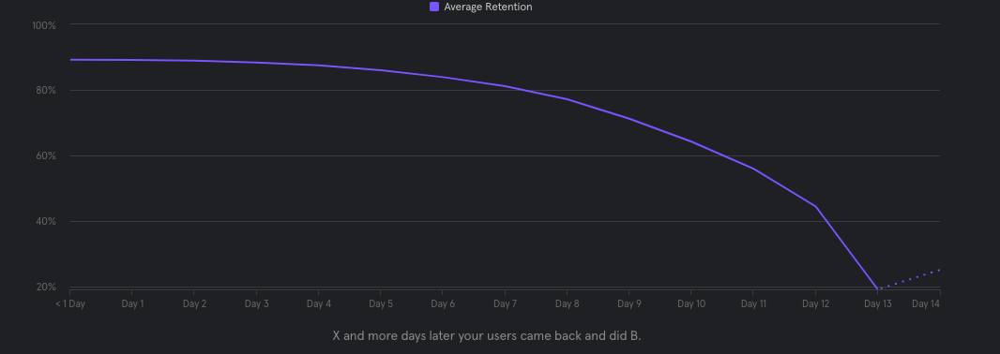
-
What proportion of users initiated and completed the available tutorials?
Based on the analysis of tutorial start and end event data, I found that users often commence the tutorials but do not reach the completion stage. However, this behavior may not necessarily be concerning, as it suggests that users may have obtained the necessary insights to fulfill a particular process or step.
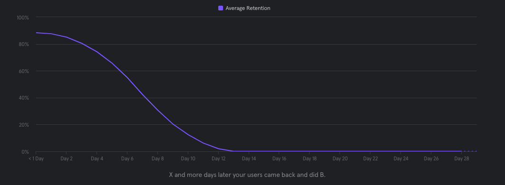Flows:
Analyzing user flows allows you to comprehend the common routes users take within your product, including identifying drop-off points. Flows may consist of repeated steps as they showcase the sequential order of user events, whereas funnel events are counted only once, focusing on user progression.
-
What actions did users typically perform immediately after signing up?
This standard user journey analysis reveals the predominant process flow adopted by the new users. An overwhelming majority of 74.62% initiate the tutorials as their first course of action.
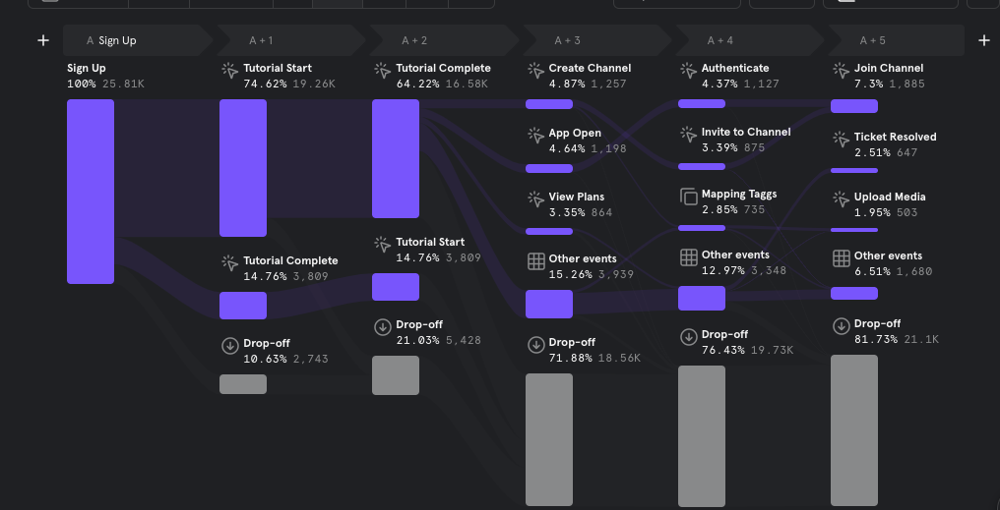
-
What are the frequently observed sequences of actions before sending a message?
In addition to illustrating the user journey flow for a specific process, flow analysis can also reveal the preceding actions taken by users before engaging in a particular task.
In this case, I examined the sequence of actions performed by users prior to utilizing the software to send a message. The analysis indicates that 19.42% of users first joined a channel, 9% uploaded media (likely a profile picture) as the initial step, 9% created a channel beforehand, while the remaining 20.16% executed various other tasks prior to sending a message.
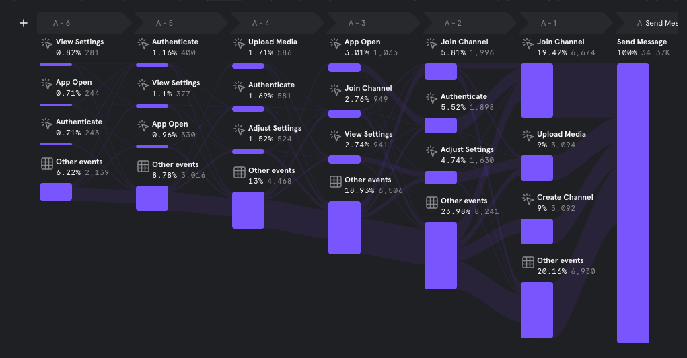
-
What is the user navigation pattern between account creation and joining a channel?
This analysis reveals the user journey flow from account creation to joining a new channel. It appears that the majority of the users follow a pattern of creating a new workspace and inviting members before proceeding to join a channel.
Conclusion
Effective product analytics revolves around asking the right questions to your data and aligning your metrics with your product goals. In this analysis, the primary objective was to identify user pain points, which I accomplished by examining the stages with the highest drop-offs and declining analysis results. Based on the findings, I can draw the following conclusions: